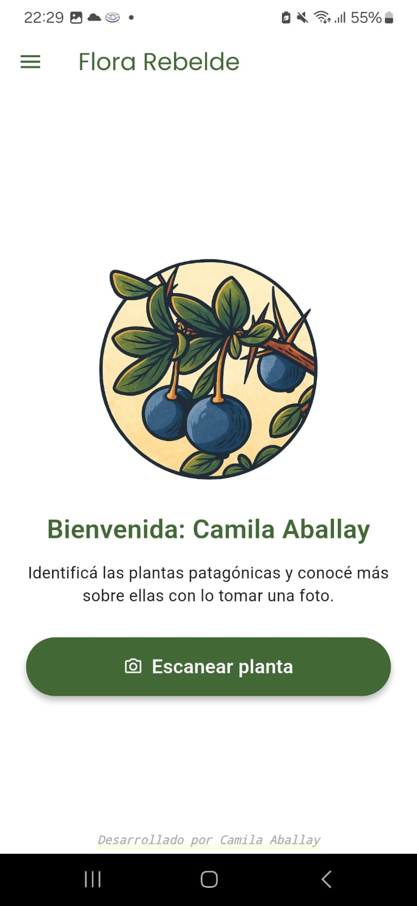

Flutter · Dart · Appwrite · IA Propia · Geolocalización
android Demo disponible proximamente para Android
¿Cómo funciona Flora Rebelde?
Captura
El usuario toma una fotografía de una planta utilizando la aplicación móvil.
Procesamiento
La imagen es recibida por la aplicación desarrollada con Flutter y Firebase.
Inteligencia Artificial
El modelo entrenado con un dataset propio de flora patagónica identifica la especie.
Identificación
La aplicación muestra el nombre y la información botánica de la planta reconocida.
Geolocalización
La observación queda registrada en el mapa junto con su ubicación.
Comunidad
Otros usuarios pueden visualizar las especies registradas y explorar nuevas observaciones.